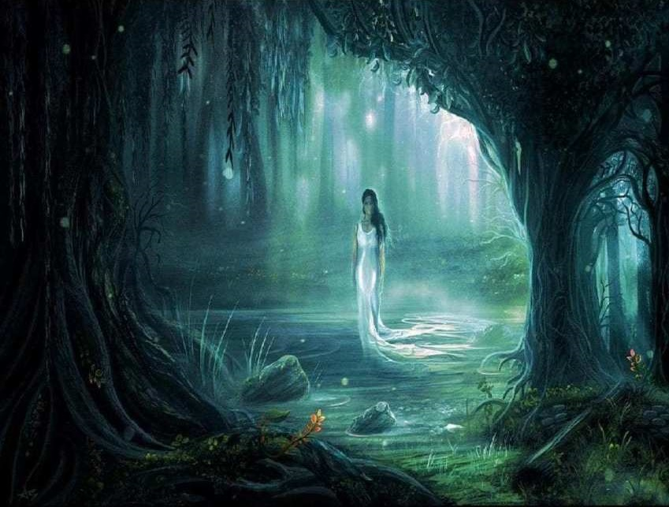
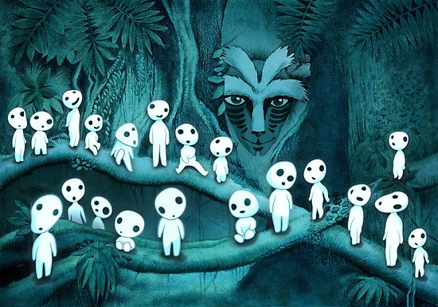
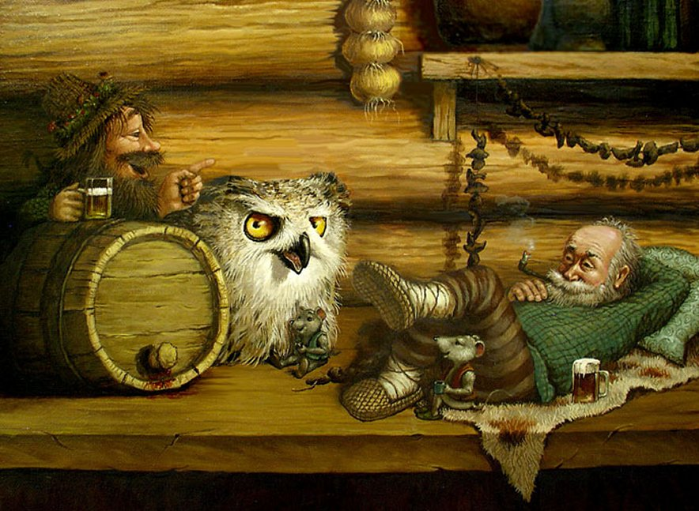
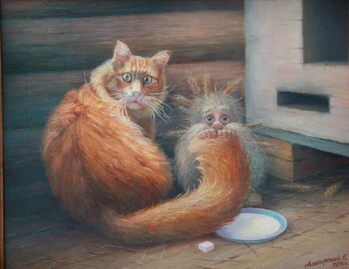

Water Creatures and Spirits
Belarus is often called a blue-eyed country as there are thousands of lakes, rivers and swamps here. No wonder that Belarusian folklore is rich in water spirits. Here are the most wide spread ones.
Read
Forest Creatures and Spirits
Belarus is famous for its thick forests and pushchas as well. So the second largest group of mysterious creatures is made up of the following
ReadAiry Spirits and Creatures
This group is the least one and is represented only by two kinds in our work.
ReadHousehold Spirits and Creatures
Belarusian people have always been considered to be hard-working. The main sources of their income have been gardening, kitchen gardening, cattle-breeding and housework. The largest group of mysterious creatures according to their function is Household Spirits and Creatures.
ReadProtectors and Helpers
In Belarusian folklore there are spirits that are ready to help and protect people in different ways.
ReadTrouble and Damage Makers
People couldn’t understand and explain every natural phenomenon, so they believed that evil spirits punished them or caused diseases. That is why there were quite a lot of dif-ferent so called Trouble and Damage Makers.
Read